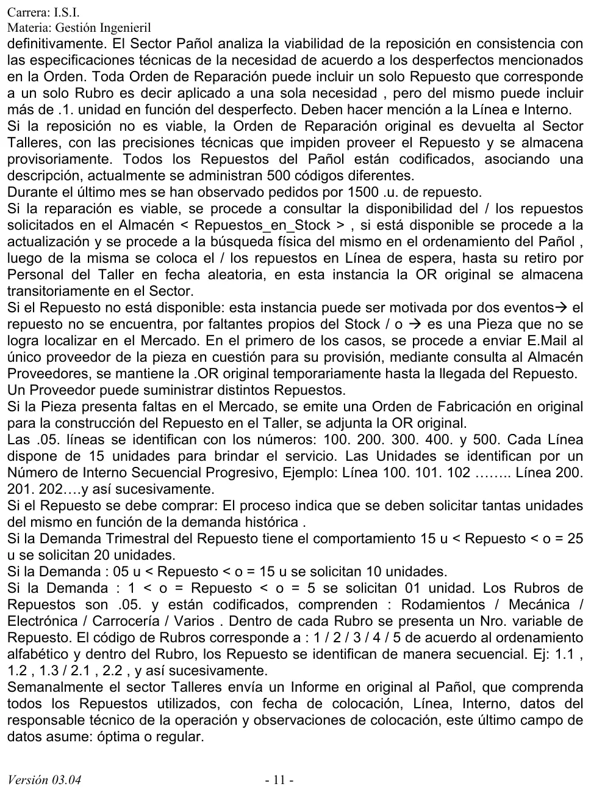
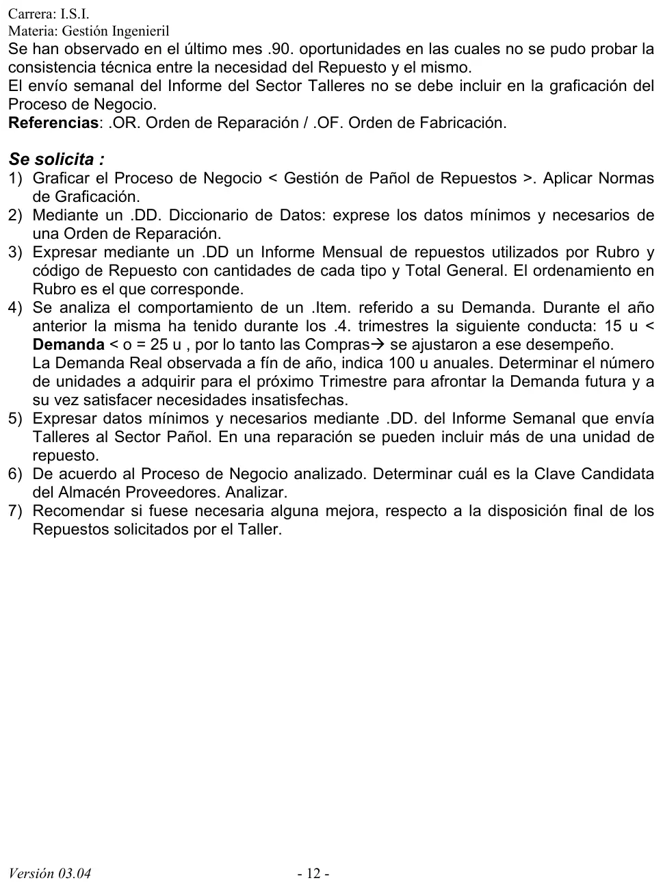

Práctica, ejercicio 7: gestión de pañol de repuestos
Práctica de la cátedra, 2017
Enunciado





Propuesta de respuesta
Respuesta no verificada. La propuso Luta Studios con inteligencia artificial y ningún docente la revisó. Puede tener errores.
1. Cursograma
Una columna por sector, con los símbolos del resumen de un alumno que usa la materia. El original de la orden recorre el Pañol, y el duplicado conformado vuelve a Talleres. La línea de espera es una demora, y el retiro y la fabricación son procesos no representados, porque la narrativa no los detalla. La doble línea entre la OF y la OR es la acción conjunta, porque la orden va adjunta. El informe semanal no se dibuja, como pide la narrativa. Tocá el dibujo para verlo en pantalla completa.
2. DD de la orden de reparación
Orden_Reparacion = nro_OR + fecha + nro_linea(d) + nro_interno
+ cod_repuesto + cantidad + desperfecto
+ (precisiones_tecnicas)
nro_linea(d) = <100 | 200 | 300 | 400 | 500>Lleva un solo repuesto, así que cod_repuesto no se repite, pero cantidad puede ser más de 1. El código del repuesto ya dice el rubro, porque es el número de rubro y un secuencial, como 2.3. nro_interno es el de la unidad dentro de su línea, por ejemplo de 101 a 115 en la línea 100. desperfecto es lo que el Pañol usa para analizar la viabilidad. precisiones_tecnicas va solo si la reposición no es viable.
3. DD del informe mensual de repuestos utilizados
Informe_Mensual = mes + anio + rubro(e) + total_general
rubro(e) = cod_rubro + nombre_rubro + repuesto(e) + total_rubro
repuesto(e) = cod_repuesto + descripcion + cantidadrubro(e) se repite una vez por rubro, en el orden de su código. El código sale del orden alfabético, así que el informe va así.
| Código | Rubro |
|---|---|
| 1 | Carrocería |
| 2 | Electrónica |
| 3 | Mecánica |
| 4 | Rodamientos |
| 5 | Varios |
Dentro de cada rubro, los repuestos van por su secuencial, como 1.1, 1.2 y 1.3. total_rubro suma las cantidades del rubro y total_general suma los cinco rubros.
4. Unidades a comprar el próximo trimestre
Con una demanda trimestral entre 15 y 25 u, la regla compra 20 u por trimestre.
Se compran 45 unidades. 25 cubren la demanda del trimestre y 20 reponen lo que faltó el año pasado. La regla explica el faltante. Compra 20 u para todo el tramo de 15 a 25 u, así que con una demanda de 25 u por trimestre faltan 5 cada vez.
5. DD del informe semanal de Talleres
Informe_Semanal = nro_informe + fecha_desde + fecha_hasta
+ colocacion(e)
colocacion(e) = nro_OR + cod_repuesto + cantidad
+ fecha_colocacion + nro_linea + nro_interno
+ responsable(e) + observacion(d)
responsable(e) = legajo + apellido_nombre
observacion(d) = <óptima | regular>colocacion(e) se repite por cada repuesto usado en la semana. cantidad va porque una reparación puede usar más de una unidad del repuesto. nro_OR une cada colocación con la orden que pidió el repuesto.
6. Clave candidata del almacén Proveedores
Cada repuesto tiene un único proveedor, pero un proveedor puede dar distintos repuestos.
- Si el almacén guarda un registro por proveedor, con su código, razón social y mail, la clave candidata es
cod_proveedor. El CUIT también lo es, porque no se repite entre proveedores. - Si el almacén guarda un registro por repuesto con su proveedor, que es como lo usa el Pañol para saber a quién pedirle una pieza, la clave candidata es
cod_repuesto. Como cada repuesto tiene un solo proveedor, no se repite, mientras quecod_proveedorsí se repite.
Lo más ordenado es separar las dos cosas. Proveedores con clave cod_proveedor, y en cada repuesto el cod_proveedor de quien lo provee. Así el mail del proveedor se guarda una sola vez.
7. Disposición final de los repuestos solicitados
Hoy el repuesto queda en la línea de espera hasta que el Taller lo retira «en fecha aleatoria», y la orden queda en un archivo transitorio que no se cierra.
Mejoras propuestas.
- Avisarle a Talleres cuando el repuesto está listo y fijar un plazo de retiro, por ejemplo 48 horas.
- Que quien retira firme la orden. Con esa firma la orden pasa al archivo definitivo.
- Si no se retira en el plazo, el repuesto vuelve al stock y se actualiza Repuestos_en_Stock.
- Cruzar las órdenes retiradas con el informe semanal. Así se ve si cada repuesto entregado se colocó, y se evitan casos como las 90 veces del último mes en que no se pudo probar que el repuesto correspondía a la necesidad.
Respuesta no verificada. Puede tener errores.
Se armó con las páginas del parcial, secciones Cursograma, Diccionario de datos y Fallas y mejoras.
Quedó en duda: La consigna 4 suma la demanda insatisfecha a la del trimestre siguiente. Es una lectura de «afrontar la demanda futura y satisfacer necesidades insatisfechas». La narrativa no dice qué pasa con la orden temporaria cuando llega el repuesto pedido al proveedor, ni con la orden adjunta a la de fabricación. La clave de Proveedores depende de cómo se arme el almacén, por eso van las dos lecturas. El cursograma y el DD salen de material de alumnos.